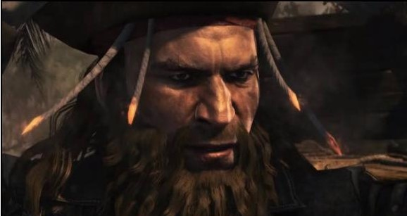

Un pirata es aquella persona que asalta y roba a barcos en el mar o que se dedica a trabajar en la clandestinidad.
Eran gente sin futuro, venían desde Europa delincuentes, esclavos y desesperados al Nuevo Mundo esperando encontrar libertad y una nueva vida, por esa razón la zona del Caribe y sus costas son una de las más conocidas como habitadas por piratas, además de que los principales refugios de muchos de ellos se encontraban ahí, y debido al intento de la Corona española por limpiar esas islas y aguas de piratas, se concentraron aún más en las islas que hoy se conocen como refugios o nidos piratas, hasta la extinción de los mismos.
¿Qué es un corsario?
Es un pirata, pero que no actúa en la clandestinidad, sino que acata órdenes de las autoridades ejerciendo como pirata, y en los tiempos bélicos.
¿Qué es un filibustero?
Antes eran bucaneros, pasaron a formar parte de este grupo Del francés “filibuster”, lo cual significa “se hace botín libremente”; o del inglés “flyboat”, que es “velero rápido”. Piratas que actúan por cuenta propia, aventureros sin comisión de Gobierno ni patente, invadían territorios ajenos estando armados. Fueron llamados así por el tipo de embarcaciones que usaban
La palabra Pirata viene del griego Peiran, lo cual significa arriesgar, intentar,ir a la aventura. Las personas que tomaban estas actitudes con el fin de realizar actos ilìcitos en alta mar, como la captura de bienes y botines, ya fuera de otros piratas enemigos, o barcos comerciantes con alta cantidad de lo que ellos consideraban tesoros, a bordo.
Las primeras apariciones de piratas se remontan hasta el siglo V a.C, en el Golfo Pérsico, en la cual era llamada “La costa de los piratas”. Durante toda la Antigüedad los piratas se mantuvieron activos. Algunas otras zonas en donde se concentraban fueron El mar Mediterráneo y el mar de la China Meridional.
El siglo XVIII, sin embargo, los piratas berberiscos (corsarios otomanos, musulmanes que actuaban desde sus bases, en Norte África), duraron hasta el siglo XIX.
Porque era en el mar en donde se encontraban las mejores mercancías para saquear. Los barcos con ricas mercancías que comerciaban con otras tierras transitaban por rutas marítimas ya conocidas por lo que los piratas tenían listas estrategias, armamento y tripulación listos para conseguir botín, en el mar, dado que las mercancías aun venían nuevas, y por lo pesado de los barcos, los piratas les daban alcance. Los del Caribe son muchos y muy conocidos.
La bandera negra con una calavera y dos espadas cruzadas por debajo, es un emblema que se hizo famoso gracias a Jack Rackham, era el símbolo de su barco, y el cual pasaría a convertirse en el emblema pirata.
“El primer uso conocido de Jolly Roger como el nombre de la bandera pirata hace referencia a los capitanes Bartholomew Roberts y Francis Spriggs en 1721 y 1723 respectivamente. Curiosamente ninguna de las dos banderas tenía el diseño original de calavera con huesos cruzados.”
Sus banderas piratas: si era negra, un aviso, roja, lucha a vida o muerte. Ofrecían dos posibilidades: rendirse o morir. Las calaveras, o las espadas, o cualquier otro símbolo suyo, era asociado con la muerte o con el terror, con esto recordaban a sus víctimas que no habría clemencia si no se rendían a tiempo, recordarle la crueldad de la que eran capaces, y que, a menos que se salvaran por rendirse o algo más, les esperaba una muerte segura, en especial con los piratas más salvajes, violentos y crueles de la historia.
PIRATAS Y BARCOS FAMOSOS
Barcos
- Queen Anne’s revenge (La venganza de la Reina Anna) Fragata francesa destinada al transporte de esclavos, llamada el Concorde, rebautizada como La Venganza de la Reina Anna por Edward Teach tras ser capturada por el pirata en aguas del Caribe.

- Rebecca

- Saint James (San James)

- The Pride (El Orgullo)

- The Fancy (La Fantasía)

- The Golden Hind (El Dorado Posterior)

- The Jolly Roger

- Adventure Galley (Galería de Aventuras)

- La Defensa

- Revenge (Venganza)

- Royal James (Real James)


- Ganj-i-Sawai

- CSS Alabama

- Satisfaction

- The Flying Dragon (El Dragón Volador)

- Happy Delivery (Entrega Feliz)

- Bachelor's Delight (Delicia de soltero)

- Sea King (Mar Rey / Rey del Mar)

- Speaker (Altavoz)

- The Ranger (El Vigilante / EL Explorador)

- Little Ranger (El pequeño Vigilante / Explorador)

- Great Ranger (El gran Vigilante / Explorador)

- Fortune (Fortuna)

- Good Fortune (Buena Fortuna)

- Royal Fortune (Fortuna Real)

- Fame's Revenge (La Venganza de la Fama)

- El Defensor de Pedro, rebautizado como La Burla Negra

Piratas
EL MÁS FAMOSO
Claramente, es imposible que alguien oiga hablar sobre piratas y no oír hablar de Edward Teach, mayormente conocido como Barbanegra, el cual era conocido como el pirata más famoso de la historia. Entró a la piratería al terminar la Guerra de Sucesión española. También era el más temido de todos, se decía que parecía el mismo demonio, al usar su característico atuendo con mechas encendidas incrustadas en su sombrero al realizar ataques, y a bordo del Venganza de la Reina Anna, su buque insignia, era el terror de cualquier lugar por donde pasaba.

EL QUE SE SALVÓ DE MORIR EN LA HORCA
Barbanegra, murió el 22 de Noviembre de 1718 a manos del teniente Roberts Maynar y su tripulación. Bartholomew Roberts: murió en batalla el 10 de Mayo de 1722.

EL MÁS CRUEL
Charles Vane, cruel y salvaje.

EL MÁS VIOLENTO
Edward Low (uno de los más violentos y sádicos de la historia).

EL MÁS EXITOSO
Edward Low (se convirtió en uno de los más exitosos y temidos de su tiempo); Bartholomew John Roberts (Black Bart(conocido como el pirata más exitoso de la época dorada pirata, con cuatrocientos atracos conocidos, consiguió y tuvo bastantes barcos)).
EL MÁS BENÉVOLO
Bartholomew Roberts, debido a su educación, el buen trato a las mujeres y el hecho de que se abstenía del licor.
EL PRIMER PIRATA DE LA HISTORIA
Polícrates, de Samos, fue un poderoso tirano de entre los años 540 y 522 a.C, su caída significó un gran impacto en el mundo griego.

EL ÚLTIMO PIRATA DE LA HISTORIA
Benito Soto Aboal. Llamado también, el último pirata del atlántico, fue un sanguinario pirata nacido en Pontevedra en 1805, que con sólo 20 años ya era temido por todos los mares por su agresividad y violencia en los ataques.

William Kidd
Bento Soto Aboal
Bartholomew Roberts
Francis Drake
Henry Morgan
Jean Lafitte
Jeireddin Barbaroja
Mary Read
Jack Rckham
Anne Bonny
Charles Vane
Edward Kenway
Y cerramos con broche de oro con nuestro querido y famoso amigo...
Edward Teach, mejor conocido como Barbanegra
¿Sabías qué...?
Los piratas, al enterrar sus tesoros, llevaban consigo a 3 o 4 hombres, los cuales, sabiéndolo o no, iban a su cita con la muerte: El pirata a cargo ordenaba a los otros tres o cuatro hombres realizar la excavación y realizar el entierro, y los cuales posteriormente era asesinados por el hombre a cargo y puestos encima del tesoro, esto con el fin de evitar que se revelara el paradero del mismo.
¿Qué comían los piratas?
Los piratas tenían una alimentación variada, llegando a los límites en muchas ocasiones. Cuando podían y conseguían suficiente comida, se daban el lujo de gozar de grandes manjares al menos dos veces al día, como carne fresca, ya fuera de gallina o de tortuga, y bastante, bastante ron, en esos momentos eran considerados privilegiados, dado que en ese entonces se daba mucho el pasar hambre. Conseguían huevos de tortuga y carne fresca de la misma, o incluso animales de granja como las gallinas, al llegar a territorios abandonados se reabastecían de estos animales y los llevaban en el barco todavía vivos, para que su carne continuara fresca.
Sin embargo cuando pasaban hambre era aún peor que cuando los marineros podían comer aunque fuera una vez al día, tomaban cualquier cosa para sobrevivir, al grado de llegar a comer galletas malolientes y con insectos dentro, carne ya pasada, y en el peor de los casos, ratas y cuero, hervían las ratas y las condimentaban para que el sabor no fuera tan desagradable, y el cuero lo remojaban para ablandarlo e ingerirlo, igualmente con las galletas, duraban mucho, pero se hacían duras y traían insectos dentro desde el proceso de preparación (la higiene en esa época no era algo que se cuidara demasiado, menos en un puerto), por lo que las golpeaban contra la mesa para expulsar a estos insectos, y las remojaban para ablandarlas. Curiosamente, los piratas que se animaban a comer ratas conseguían ser inmunes ante una enfermedad de debilitamiento por falta de Vitamina C conocida como Escorbuto, ya que las ratas traían dentro de su organismo una sustancia que los vuelve inmunes a esta enfermedad.
Pero algo que no podía faltar en el barco, era la bebida, en este caso el Ron, el cual se popularizó entre los piratas sobre todo en la zona del Caribe, y se extendió junto con la fama de los piratas también en otros territorios. Los piratas elegían el Ron debido a su alto contenido de alcohol, por esta razón en muchas ocasiones rechazaban otras bebidas como el vino o la cerveza, o por la escasez de los mismos, considerando además el vino como una bebida poco buena o de mala calidad, sin embargo una que otra vez se les podía ver bebiendo cerveza. De hecho el tomar alcohol muchas veces era la causa de que fueran capturados tan fácil y rápidamente, dado que los atacaban en ocasiones después de un muy buen banquete, por lo cual se podía deducir que estaban bien borrachos y algunos no podían ni moverse, solo alguno que otro que se hubiera abstenido de beber o no hubiera bebido tanto era quien podía hacerle frente al enemigo (En el caso de Jack Rackham, que iba acompañado por sus dos mujeres piratas: Anne Bonny y Mary Read, tenía un poco más de tripulación dispuesta para pelear, mientras que la mayoría estaba borracha, eran las dos mujeres y cualquiera que todavía pudiera sostenerse en pie quienes presentaban batalla).
De hecho hay otro invento de bebida de los propios piratas para suplir al agua, ya que ésta se estancaba rápidamente y era prácticamente imposible beber agua del mar, por lo que se inventó el Grog, que consiste en agua hervida mezclada con Ron, azúcar y un ácido, y fuera limón o lima. Esto más el hecho de agregarle especias y contenidos generosos de condimentos a los alimentos casi echados a perder, si no es que ya lo estaban, suavisaban un poco el sabor desagradable de la comida y bebida, se intentaba que el paladar de los de a bordo no la pasara tan mal, aunque en ocasiones se tenía poco éxito.
La extinción de los piratas
Debido a los diversos tratados que se fueron realizando entre países, los piratas perdieron poco a poco sus escondites, su protección y sus puertos.
¿Cómo murió Edward Teach?
Edward Teach murió el 22 de Noviembre de 1718 en , en Ocracoke, Carolina del Norte, E.U.A a manos del teniente Royal Navy, Robert Maynar y su tripulación, en una batalla que terminó con la cabeza de Barbanegra separada de su cuerpo.
Indumentaria
ndumentaria de alta mar, de marinero, incluyendo claro los típicos accesorios que los piratas se llevan de recuerdo de sus numerosos atracos o peleas (pañuelos coloridos amarrados a la cabeza o a la cintura, aretes, cuentas en el cabello, el cual la mayoría de las veces es largo; garfios, parches, patas de palo, o están completitos, pero guardan en su persona algún objeto).
Barcos
Sus barcos usualmente eran ligeros, a excepción de cuando acababan de conseguir botín, esto con el fin de dar rápido alcance al barco elegido como víctima, el cual iba pesado con la carga que ellos querían y algo más, teniendo en cuenta que eran barcos de la realiza o importantes comerciantes. Los más acosados eran los Galeones.
Barcos piratas que se usaban en el Caribe:
Fuera de ser embarcaciones pesadas y que sobrepasaban en tamaño a la presa los barcos piratas se caracterizaron por pasar desapercibidos, ser muy ligeros y de tamaño pequeño, lo cual favorecía su velocidad, así les daban rápido alcance a sus víctimas y podían huir en caso de una persecución. El mantenimiento era más barato al no ser tan grande la embarcación, y es que era bastante importante ya que influye mucho en el aspecto de la velocidad de la nave. Además hacían uso de balandras o botes de remo y/o vela. Su armamento debía ser igualmente ligero: Los cañones no eran muy pesados, todo esto se buscaba con el fin de lograr mayor velocidad, que en un barco pirata era fundamental, además las velas y los aparejos tenían que estar en perfecto estado junto con el casco de la nave. Todo esto, más un diestro manejo de la nave hacían que esta ganara velocidad. Como había que navegar cierto tiempo (bastante) en el mar, se adherían algas y moluscos al casco del barco lo que obstaculizaba navegar, y hacían que el barco se volviera pesado y no pasara con tanta facilidad del oleaje y las aguas marinas.
Barco
Buque
Nao
Carablea
Nave
Navío
Bergantín
Fragata
Balandra
Goleta
Galeón
{kind=link}
El mar Carbie se convirtió en uno de los sitios más conocidos que albergaba piratas. A pesar de que las grandes islas del Caribe, como Cuba, Puerto Rico y La Española, existen aproximadamente otras 1000 islas pequeñas, las cuales servían de perfecto refugio a los piratas, incluso algunas de las grandes conocidas. Islas como:
Isla Tortuga, en Haití (ahora el fuerte pirata está inutilizado)
Isla Caimán
Jamaica (Port Royal se encuentra en Jamaica, en ese puerto era también donde se realizaba la ejecución de piratas en la horca, y algunos de ellos, probablemente los más conocidos eran puestos en jaulas dejando que el cuerpo llegara hasta los huesos, y lo usaban como escarmiento para cualquier otro pirata, uno de los piratas de los que se exhibió su cuerpo en una jaula fue Jack Rackham: Calicó Jack o Jack Calicó). Y era considerado un puerto de pecado, donde vivían todo tipo de personas que no podían presagiar nada bueno: piratas, asesinos, borrachos, maleantes, jugadores, entre muchos otros tipos de personas nada honradas.
Barbados
Bahamas
Isla Gardiners
Isla Mocha
Isla de San Cristóbal
Isla Santa María
Desde sus nidos y escondites podían atacar a los barcos que transitaban esas aguas y apoderarse de las riquezas a bordo.
Libros
Jack Sparrow - libros
- The comming storm (La tormenta que se avecina)
- The Siren song ( El canto de las sirenas)
- The pirate Chase (La persecución)
- The Sword of Corté (La espada de Cortés)
- The Age of Bronze ( La Edad de Bronce)
- Silver (Plata)
- City of Gold (La ciudad de oro)
- The timekeeper (El cronometrador)
- Dance of the hours (La danza de las horas)
- Sins of the father (Pecados del padre)
- Poseidon’s peak (Pico de Poseidón)
- Bold new Horizons (Nuevos horizontes negros/audaces)
- The tale of Billy Turner and other stories (el cuento de Billy Turner y otras historias).
Los piratas del Nuevo Mundo - Rafael Abella
King of the Pirates: The Swashbuckling Life of Henry Every
Películas
Piratas del Caribe (Pirates of the Caribbean)
- La Maldición del Perla Negra (The curse of the Black Pearl)
- El cofre de la Muerte (Dead man's chest)
- En el Fin del Mundo (At the Worl'd End)
- Navegando aguas misteriosas (On stranger Tides)
- La venganza de Salazar (Salazar's revenge / Dead man Tell no Tales)
En el corazón del mar
Peter Pan
Pan
La Isla de las cabezas cortadas(Cutthroat Island)
La isla del Tesoro
El Capitán Garfio - Peter Pan, de Robin Williams - También conocida como Hook, el retorno del Capitán Garfio
Black Sails
Assassin's Creed IV Blag Flag / Sangre de Pirata
El halcón del mar (The sea Hawk)
El temible Burlón (The Crimson Pirate)
Viento en las velas
Los Goonies (The Goonies)
Piratas, de Roman Polanski
Capitan Phillips
-Piratas más modernos-
Música